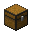

A Superfície
Tudo o que existe no mundo normal: todos os biomas, com os animais e os monstros de cada um, e todas as estruturas — da vila à Cidade Ancestral —, com onde encontrar cada uma e o que vem nos baús.
Guia rápido: clique em uma estrutura ou em um tipo de bioma
Estruturas na superfície
Estruturas na água
Estruturas embaixo da terra
Biomas
Arraste para o lado para ver todos →
 Os biomas do mundo normal
Os biomas do mundo normal

As estruturasSão as construções que o jogo espalha pelo mundo: em cima da terra, debaixo d'água e lá no fundo das cavernas. Veja onde procurar cada uma, quem mora lá e o que tem nos baús — com a chance de cada item aparecer.